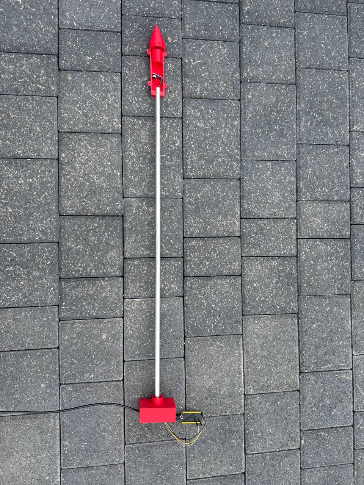
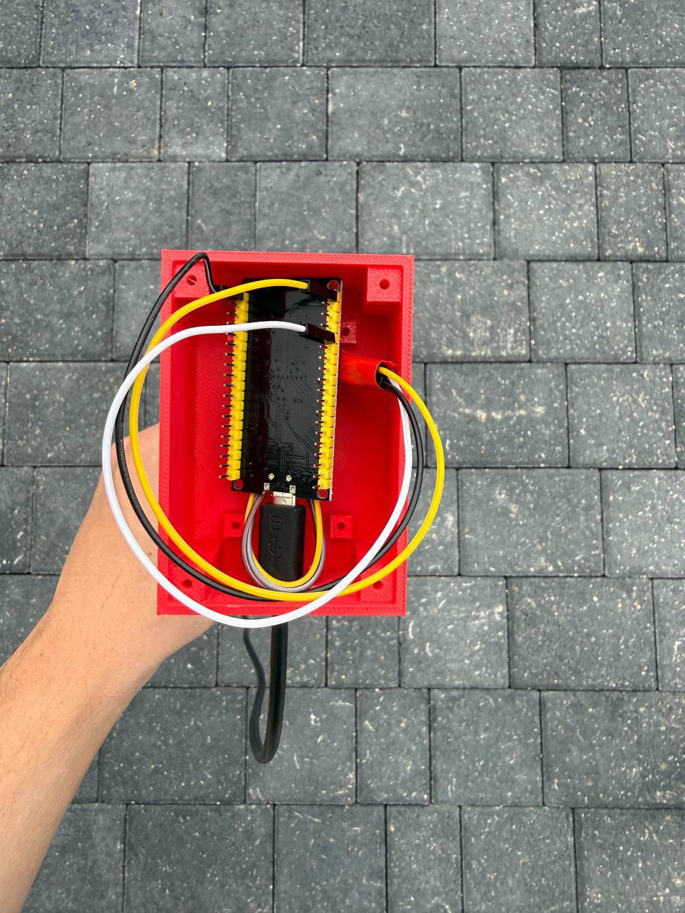
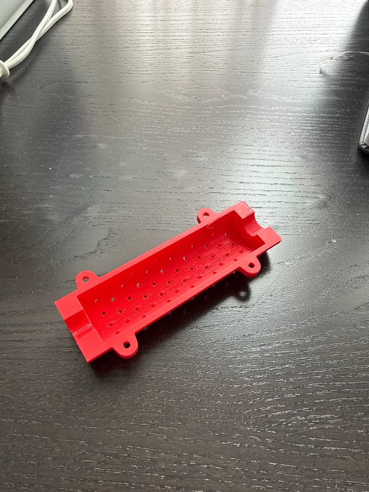
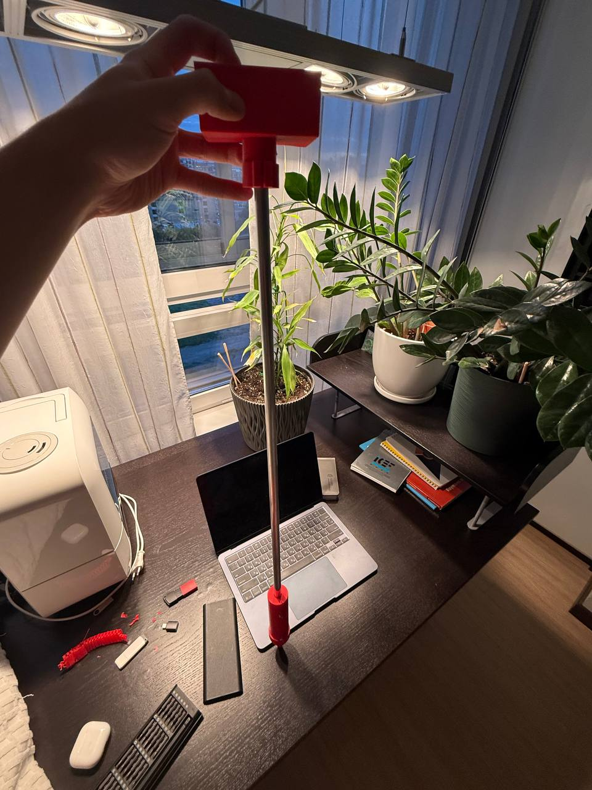
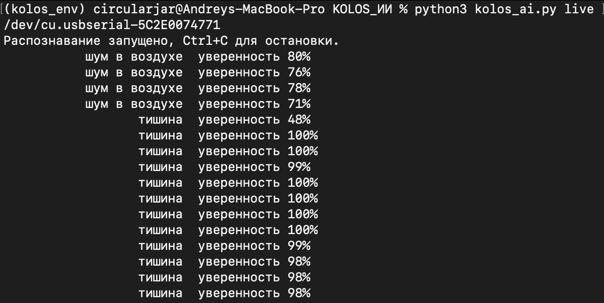

Sensor head



Orenburg is my hometown and one of Russia's main grain regions. Most warehouses there check grain by hand sampling, and imported monitoring systems have become harder and more expensive to get. I wanted a probe a small farm can afford and install by hand.




Light knocks are 3–7× above background. Tests with live insects in grain are the next stage.


«КОЛОС»: акустический зонд с машинным обучением для раннего обнаружения насекомых-вредителей в хранящемся зерне
Laureate of the remote round, All-Russian Timiryazev Contest «AIC: Youth, Science, Innovation». Invited to the national finals in Moscow.